Префектура Кумамото · Минамата · чай
«Амано сэйтяэн»: чёрный чай без пестицидов с горного плато над Минаматой
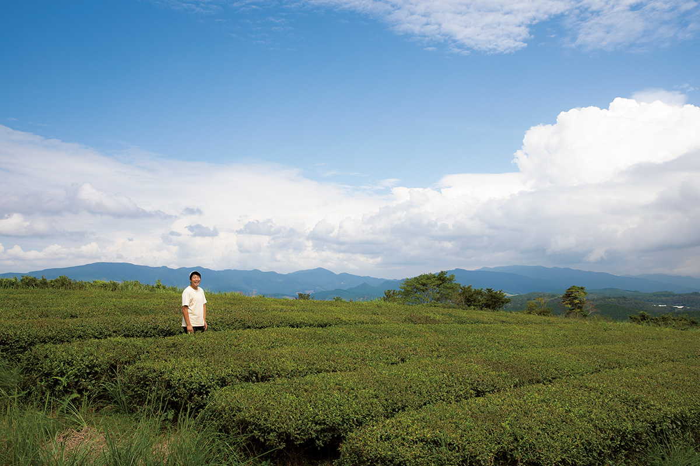
Минамату чаще вспоминают по трагической истории, чем по чаю. Но в горах на юге префектуры Кумамото семья Амано уже больше сорока лет выращивает чай без пестицидов, а их чёрный чай многие пробовали, сами того не зная, в ёкане знаменитой кондитерской Toraya.
Хозяйство
Плато, где чай растёт без химии
Минамата лежит на самом юге префектуры Кумамото, на границе с префектурой Кагосима. Как чайный край она известна куда меньше соседних Кагосимы и Миядзаки, хотя в здешних горах чай выращивают повсюду. Одно из главных хозяйств города, «Амано сэйтяэн», стоит на плато Иситоби, на высоте 630 метров, в верховьях реки Минамата.
С 1979 года здесь не используют ни пестицидов, ни химических удобрений, а около 80% урожая идёт на чёрный чай, что для Японии большая редкость. Сегодня хозяйством руководит Хироси Амано, третье поколение семьи. По его словам, повернуть к натуральному чёрному чаю решил ещё его отец.
«Дед приехал сюда в 1949 году с переселенцами осваивать землю и начал выращивать чай. Отец продолжил дело и делал зелёный чай. Но болезнь Минамата заставила его задуматься, как то, что ты производишь, влияет на всю округу. Он пересмотрел безопасность всего, что попадает в рот, и отказался от пестицидов»
Хироси Амано
Болезнь Минамата, тяжёлое отравление ртутью из сточных вод химического завода, официально признали в 1956 году, и название города с тех пор знают во всём мире. Отец Хироси сделал ещё один смелый шаг: в те годы, когда зелёный чай стоил дороже, чем сейчас, он перевёл хозяйство на чёрный. Зелёный чай оценивали прежде всего по виду сухого листа, и отсутствие пестицидов цены ему не прибавляло. Чёрный чай давал больше свободы, тогда он был в Японии в диковинку, и у хозяйства появились новые покупатели, среди них много женщин и молодёжи.
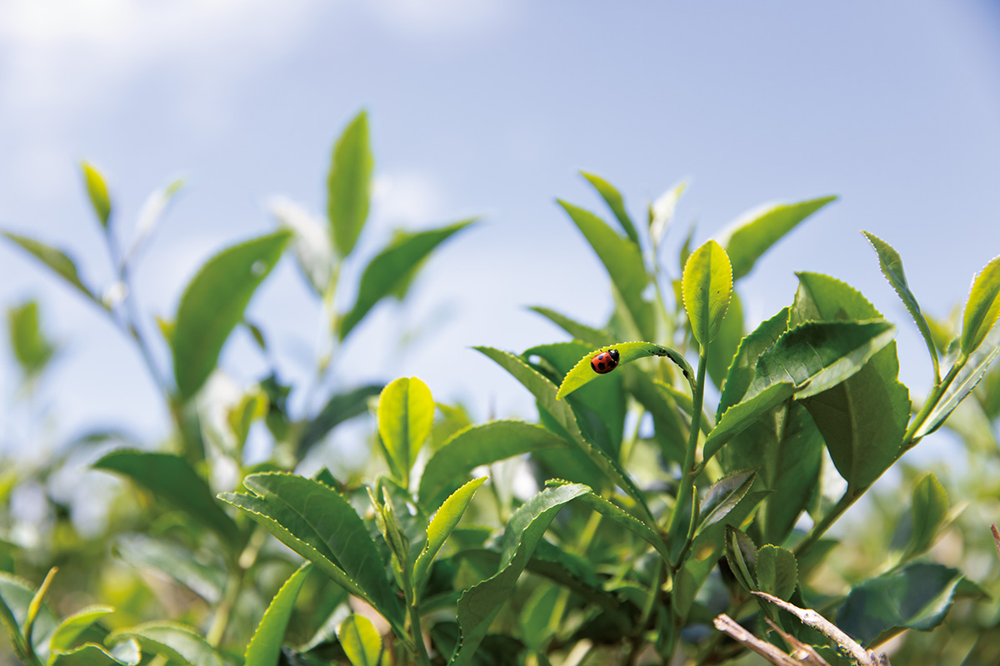
Хироси не просто продолжает дело отца. Он думает о том, как его чай связан с круговоротом жизни в лесу и как снизить нагрузку на природу округи, и говорит, что такой чай можно делать именно в Минамате.
Плато
Туман, красная земля и 11 гектаров
У плато Иситоби есть всё, что нужно хорошему чаю: большая разница дневной и ночной температуры, красная почва из вулканического пепла и частые туманы. В прошлом веке чаем здесь занимались больше двадцати семей, сейчас осталось пять хозяйств, и Хироси всё чаще берёт себе поля, которые соседи забросили.
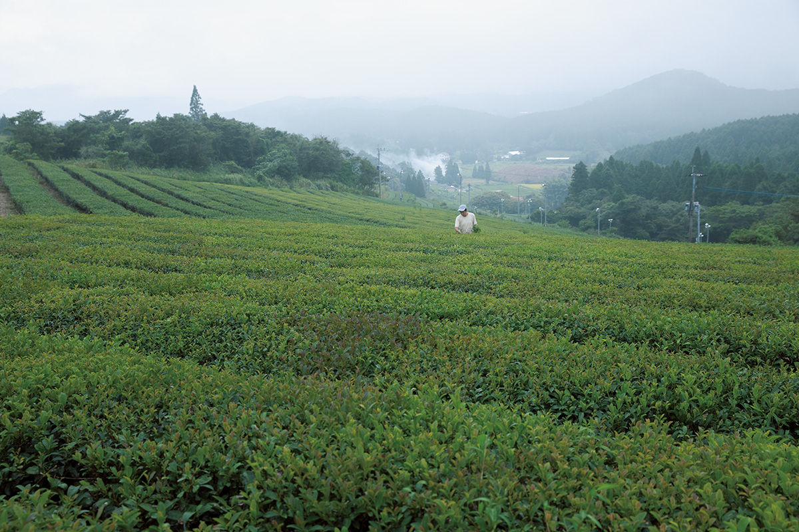
Всего у хозяйства около 11 гектаров, и поля разбросаны по горам. Условия на каждом свои, и этим здесь пользуются: кроме чёрного чая делают зелёный, улун, обжаренный ходзитя и смеси, всего 12 видов.
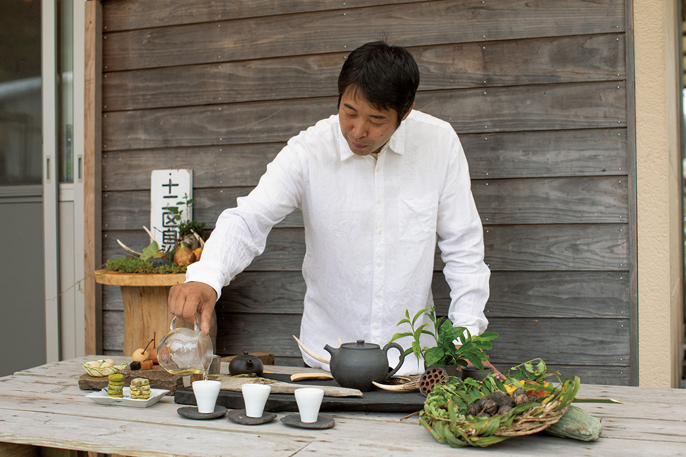
Главный чай
«Амано котя», который должна была одобрить мама
Уже тридцать лет главный чай хозяйства не меняется. Это «Амано котя», чёрный чай со сладким ароматом обжарки, напоминающим карамель. Придумал его отец Хироси, и далось это непросто.
«Отец хотел сделать чёрный чай, который сможет пить даже мама, а она чёрный чай терпеть не могла. Когда он задумал перейти на чёрный чай, она поставила условие: „Сделаешь такой, чтобы я могла пить, тогда продавай“. Он делал пробу за пробой, а одобрения всё не было. В конце концов, почти от отчаяния, он обжарил чай очень сильно, и получилось то, что надо»
Хироси Амано
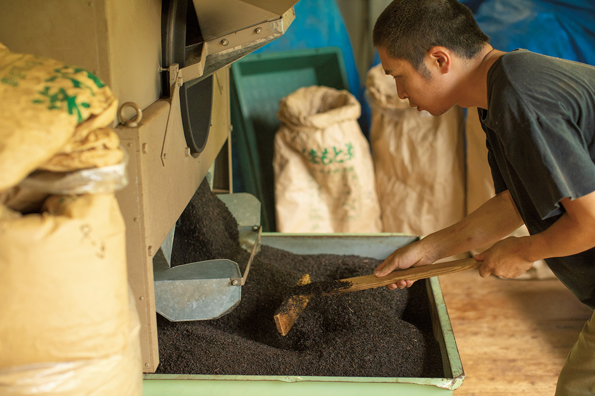
Чай получился не только ароматным, но и лёгким. Анализ показал, что при обжарке из листа уходит кофеин, поэтому вкус такой чистый. Название тоже выбрали с умыслом: если любитель чёрного чая скажет, что это вовсе не чёрный чай, всегда можно ответить, что таков характер чая от Амано. Был вариант назвать его «Минамата котя», но на имя целого города семья не решилась. Обжаривают лист на таком огне, что обычный чай превратился бы в уголь, и малейшая ошибка всё портит. Поэтому мать Хироси до сих пор каждый день пробует каждую партию.
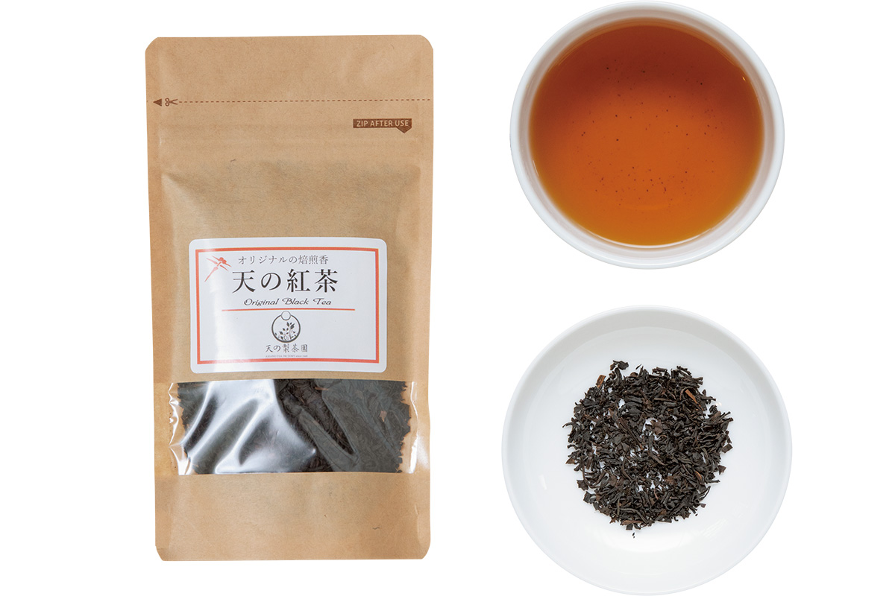
Этот чай есть и в ёкане «Котя», маленьком брикете сладкой бобовой пастилы от старинной кондитерской Toraya: его продают с 2011 года, и за годы он стал постоянной позицией в ассортименте.
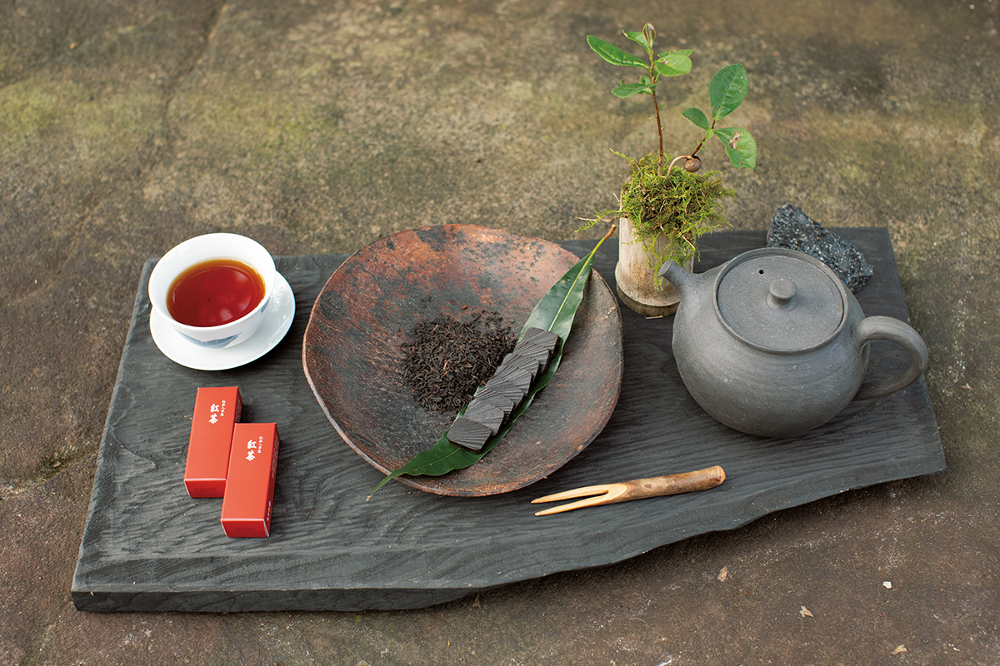
История
Как японский чёрный чай исчез и вернулся
Японский чёрный чай сегодня редкость, но в конце XIX века, в эпоху Мэйдзи, он был важным экспортным товаром. В Кумамото, в городах Ямага и Хитоёси, работали учебные мастерские. Листья собирали с растущих в природе кустов, чай делали понемногу, он был хорош и пользовался спросом. Успех и подвёл: власти взялись резко наращивать объёмы, и стало много плохого чая. В 1971 году ввоз чёрного чая в Японию разрешили свободно, дешёвый и вкусный импорт вытеснил местный, производство упало до одной-двух тонн в год по всей стране, а к 1980-м годам почти сошло на нет.
«Сейчас японского чёрного чая понемногу становится больше, и качество заметно выросло. Если чай с характером своей местности будут делать в разных краях, из этого можно собрать лучшую смесь всей Японии. Когда у каждой земли свой ясный характер, спорить внутри отрасли незачем, вкусы друг друга дополняют. У зарубежного чая есть названия по месту, Ува или Дарджилинг. Хорошо бы и японский чёрный чай пошёл по этому пути»
Хироси Амано
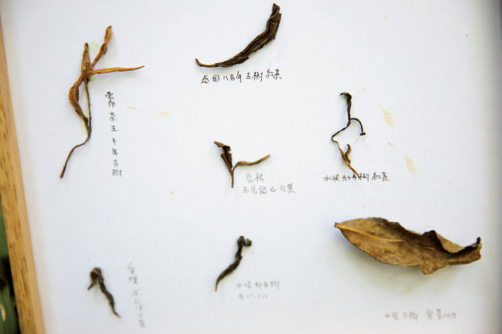
На деле японское чаеводство идёт в обратную сторону: машины делают всё одинаковым, и различия между районами стираются. Хироси уверен, что двух одинаковых участков не бывает: почва, солнце, дожди и температура должны отражаться в листе. Его семья всегда работала так, чтобы чай передавал свою землю, и он хочет показать молодым, как интересно делать чай, прислушиваясь к месту и к самому кусту.
Сеянцы
Кусты, выросшие из семян
Больше всего Хироси занимается дзайрай, местными чайными кустами, выросшими из семян. Почти весь чай на японском рынке делают из сортовых растений вроде «Ябукиты». Их размножают черенками, у каждого сорта ясный, предсказуемый характер, и выведено их уже больше сотни, многие префектуры создают свои. У черенка нет стержневого корня: тонкие корни расходятся вбок у самой поверхности, и такой куст даёт урожай лет 30–40.
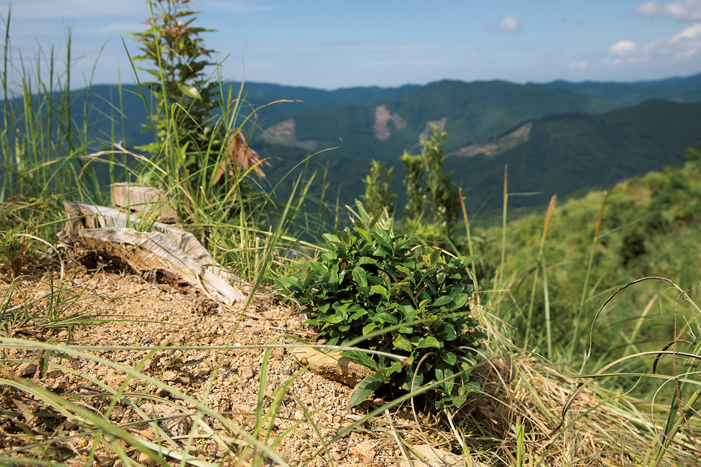
Кусты из семян все разные: цвет листа и вкус меняются от растения к растению, поэтому для машинного производства они неудобны. Зато они пускают толстый корень глубоко в землю и очень живучи. На полях Амано растут кусты из семян, посаженные ещё дедом, им около 90 лет.
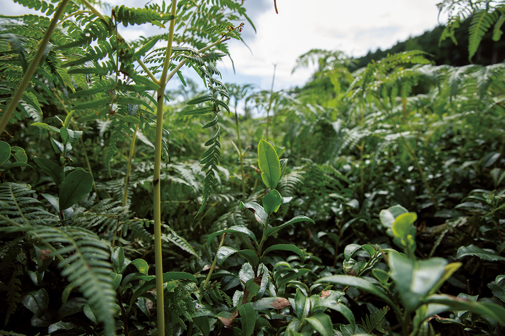
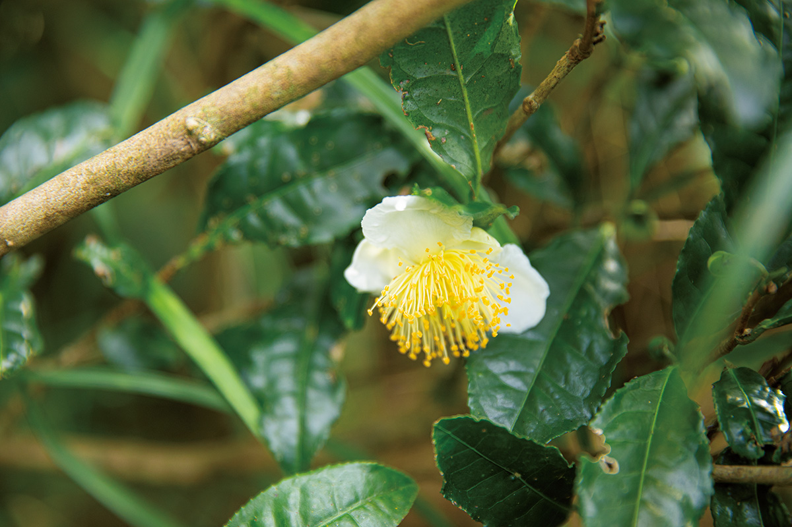
«90 лет для такого куста ещё молодость. Настоящая сила у них появляется примерно после ста. В листе старых деревьев чувствуется минеральность, будто лизнул камень, и она долго остаётся во рту. Молодому сортовому кусту такой вкус почти не дать»
Хироси Амано
Других хозяйств в Японии, где главный чай делают из 90-летних кустов, выросших из семян, нет. Хироси надеется, что лет через десять возраст этих кустов станет их неповторимым достоинством.
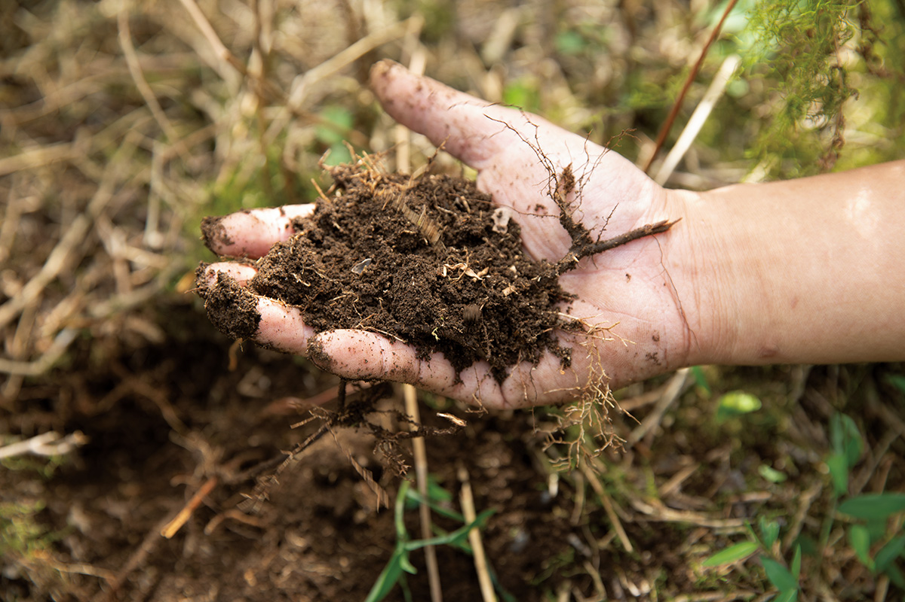
Ассортимент
Что попробовать
Кроме «Амано котя» у хозяйства есть ещё с десяток чаёв. Цены ниже указаны по 2021 году.
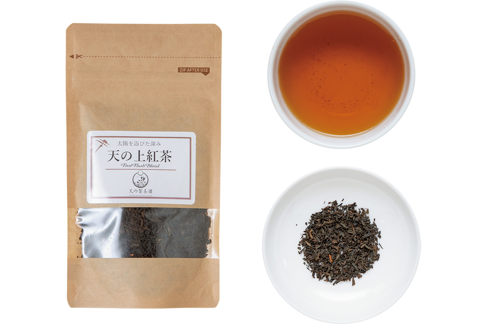
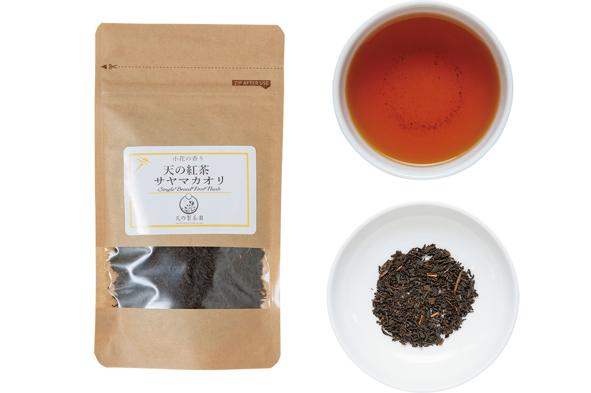
- «Дзё-котя»: если «Амано котя» делают из летнего листа и сильно обжаривают, то этот чай весеннего сбора с лёгкой обжаркой бережёт аромат самого листа. Подходит и к японским, и к европейским сладостям, и даже к блюдам с мисо.
- Имбирный чёрный чай: «Саяма каори» с имбирём без пестицидов. Имбирь слегка обжаривают, и он даёт сладость и аромат имбирного леденца. Его можно заварить покрепче и пить с молоком (30 граммов за 648 иен).
- Ходзитя: мягкий обжаренный чай из летнего зелёного, сушенного в котле (40 граммов за 540 иен). Вкусен и в холодной заварке.
- Улун: редкий японский улун, сделанный почти как китайский, с лёгкой сладостью и почти без горечи (40 граммов за 648 иен).
- Сэнтя из первого сбора «Саяма каори»: тонкие, как проволока, иглы, баланс сладости и терпкости (40 граммов за 648 иен). Интересно сравнить с чёрным чаем из того же сорта.
- «Кабусэ фукамуси-тя»: местные кусты дней десять перед сбором держат в тени, и настой становится ярче и насыщеннее (40 граммов за 648 иен).
- Гури-тя из «Ябукиты»: зелёный чай, лист которого при сушке скручивается в барабане в завитки, типично кюсюский способ (40 граммов за 648 иен).
- Три чая в пакетиках по 10 штук за 702 иены: со сансё и местной корицей никкэ (с молоком получится чай масала), с сушёными цветами османтуса без ароматизаторов и с обжаренными листьями оливы из Кумамото, которые пахнут корочкой печёного батата.
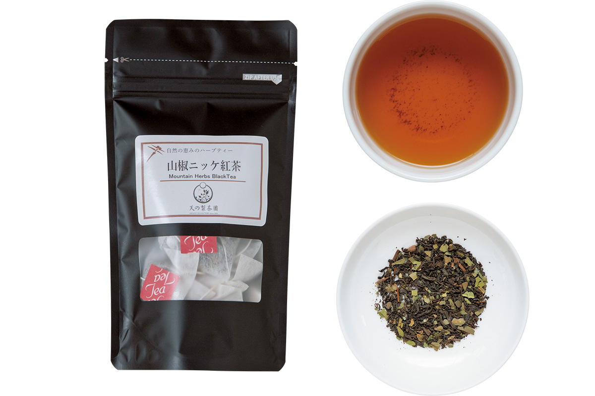
«Амано сэйтяэн»
- Адрес
- префектура Кумамото, Минамата, плато Иситоби
- Телефон
- факс +81 966-69-0918
- Цены / Вход
- осмотр полей и мастерской, дегустация и покупка по предварительной записи (данные 2021 года)
Лес
Чаепитие в лесу
Хироси пришёл к простой мысли: натуральному чаю нужна хорошая почва, а хорошей почве нужен здоровый лес вокруг. Он стал смотреть не только на поля, но и на горы, и увидел, во что их превратил человек. В Японии десятилетиями сажали леса из одной породы, чаще всего криптомерии, потому что она приносила деньги. Такие посадки при стихийных бедствиях падают разом и вызывают оползни, а лесорубов становится всё меньше, и горы стоят заброшенными.
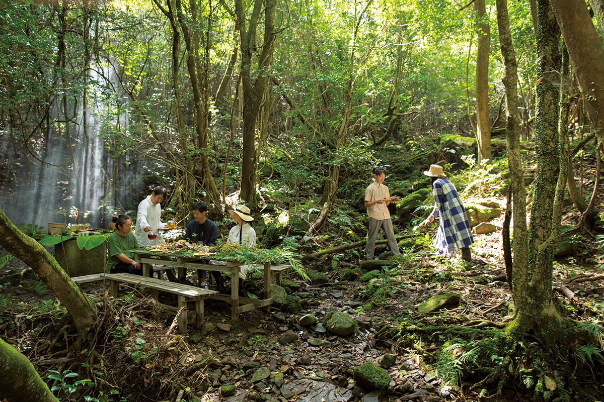
Хироси начал возвращать искусственные посадки к природному лесу, и частью этой работы стали лесные чаепития. Идея в том, чтобы собрать и разделить то, что даёт сам лес: чай, еду, ветки и листья. С единомышленниками он устраивал такие встречи в разных частях Японии.
«В японских горах растёт яматя, горный чай: говорят, он разошёлся по стране вместе с подсечным земледелием. Больше всего его на западе Японии, но во многих местах он стал частью леса. Если собрать листья с таких кустов, чай может сделать любой. Сделать свой чай и сладости, принести их и собраться в лесу, вот и всё чаепитие. Чайные кусты растут по всему миру, значит, и чаепитие можно устроить где угодно. Обычно лес видят как древесину, которую рубят и используют. Но в лесу можно и просто хорошо провести время»
Хироси Амано
По собственным наблюдениям Хироси, чайные кусты есть по всей Японии, от Окинавы до Хоккайдо. Если в округе листа не найти, горный чай может прислать он сам. А один раз научившись, дальше можно собираться и без него. Нужны только чай и сладости, остальное, по словам Хироси, сделает лес: он сам принимает гостей.
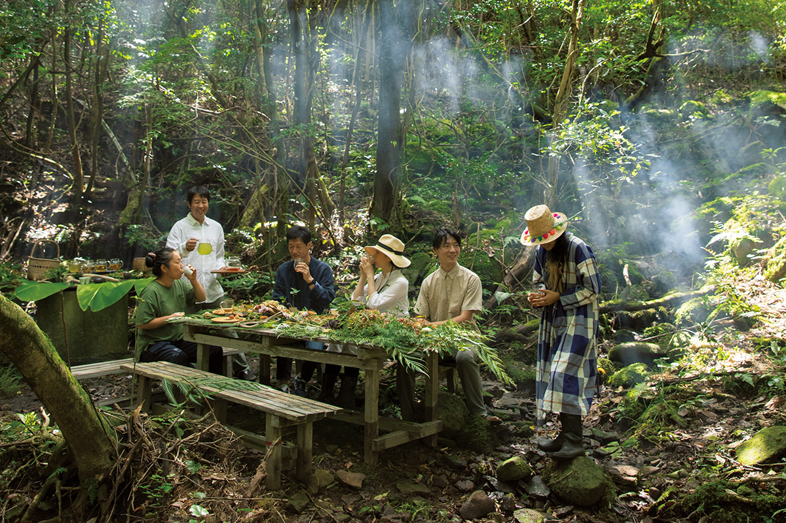
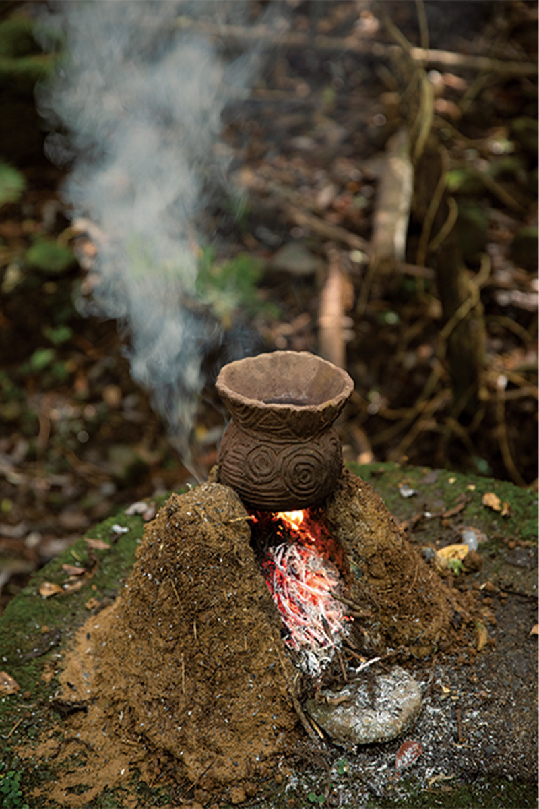
Обошлось оно без всяких декораций. Разноцветные настои сами стали украшением стола, ветки служили столовыми приборами, а опавшие листья ситечком. В лесу сложили даже простой очаг, у заброшенного колодца устроили чайную стойку, и за разговорами о чае время пролетело незаметно.
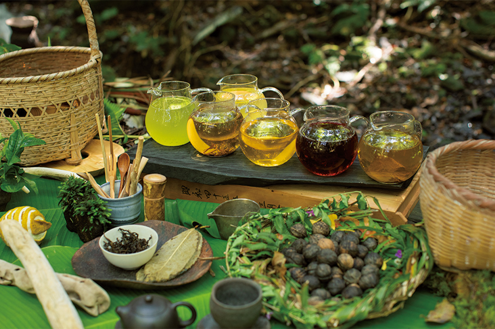
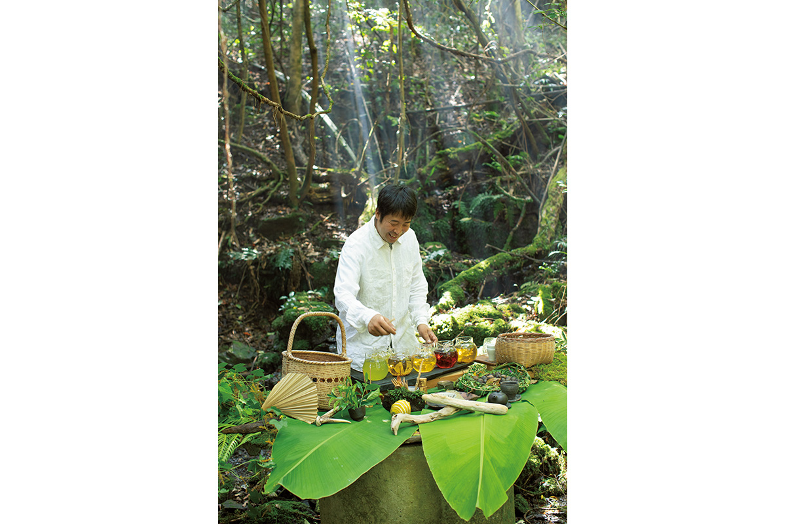
Чёрный чай своими руками
Чай для чаепития делают вручную, и повторить это можно дома.
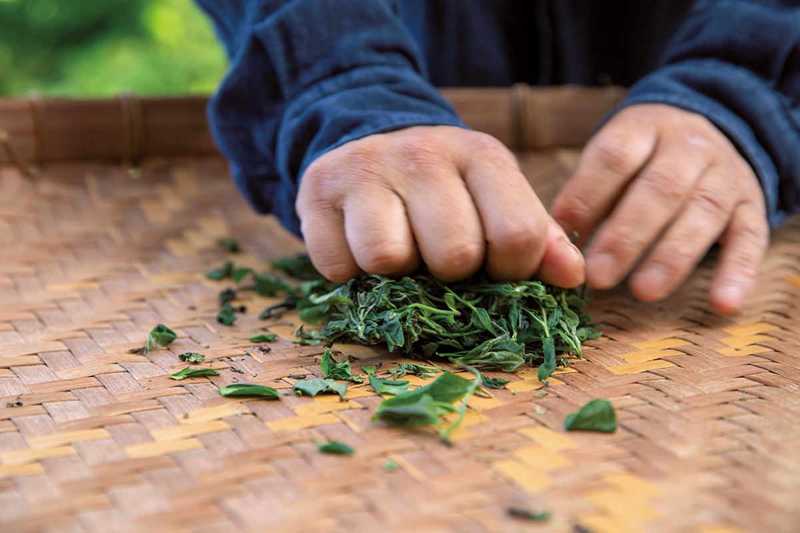
- Соберите листья с чайного куста. Главное, чтобы они были одного размера: от разнобоя зависит, ровно ли пройдёт обработка и каким выйдет вкус.
- Оставьте лист вянуть около 10 часов с включённым осушителем воздуха. Увядание слегка запускает ферментацию и раскрывает аромат.
- Мните листья, как тесто для хлеба, пока не появится пена. Ради аромата мните слегка, ради тёмного настоя сильнее.
- Накройте влажным полотенцем и оставьте на 2–3 часа во влажном месте при температуре не выше 30 °C, переворачивая, чтобы весь лист побывал на воздухе.
- Остановите ферментацию: быстро прогрейте лист на сковороде или горячим воздухом фена.
- Разложите лист на двойном слое пекарской бумаги на электрогриле, нагретом примерно до 80 °C, и сушите около часа.
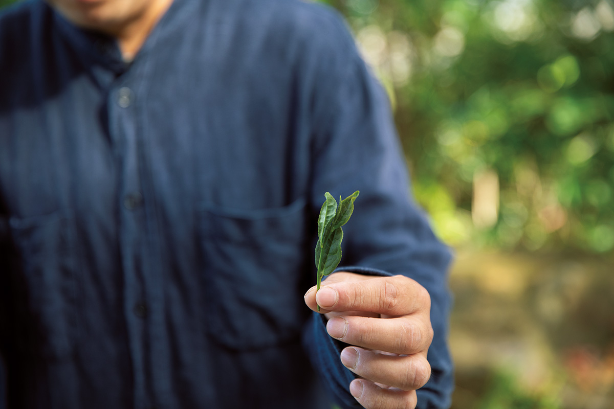
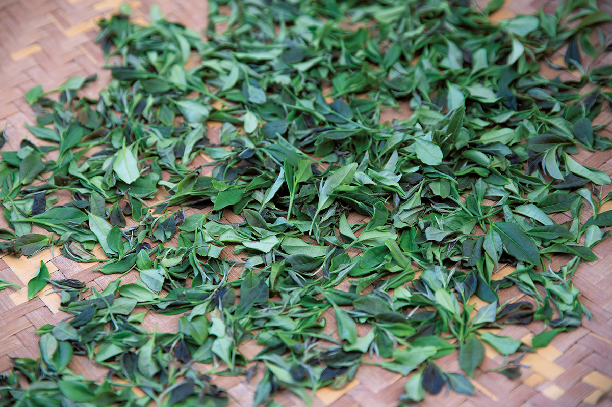
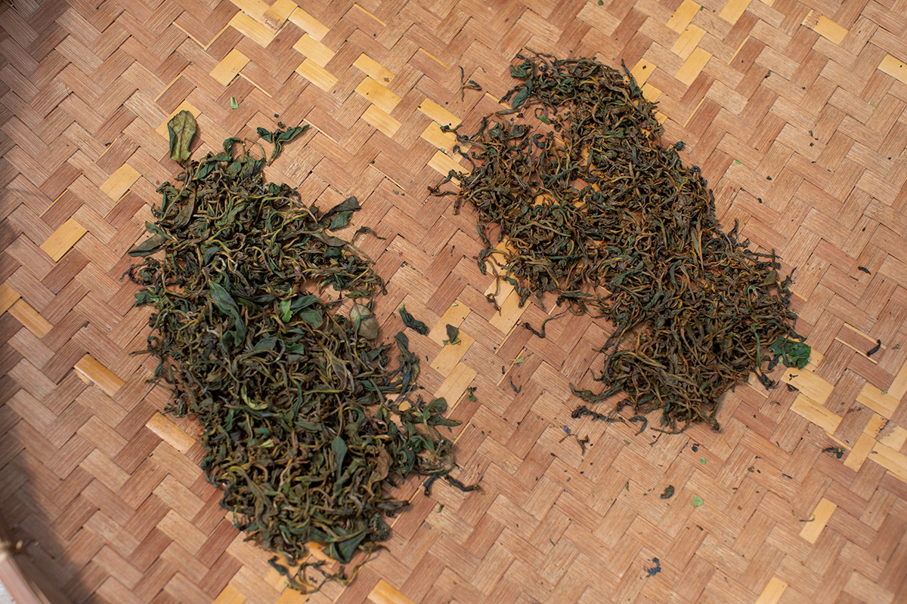
Новая марка
«Чай без замысла»
Вместе с работой в лесу Хироси запустил марку mori to tane to ocha, «лес, семена и чай». Она стоит отдельно от ассортимента хозяйства: это, как он говорит, чай без замысла производителя.
«Чай из горных кустов имеет природный вкус, который будто впитывается в тело. Кто узнает его на лесном чаепитии или по нашим чаям, у того появится своя мерка, и он сможет судить и о магазинном чае. Если покупатели станут строже к производителям, тем придётся работать честно, и вся отрасль от этого выиграет. А когда человек сам попробует сделать чай и поймёт, что есть вкус, которого дома не добиться, он иначе посмотрит и на цену: будет знать, за что платит»
Хироси Амано
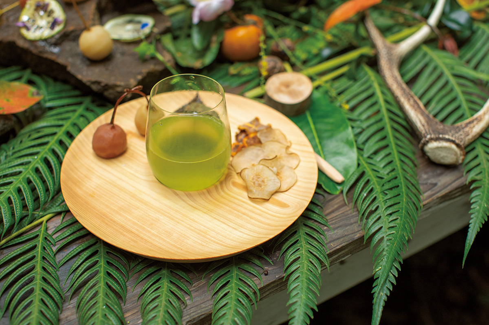
В натуральном вине и сакэ природного брожения ценят характер, и рынок для них уже созрел. Чай пока пьют иначе, и чтобы научиться его различать, начать стоит как раз с чаёв Амано.
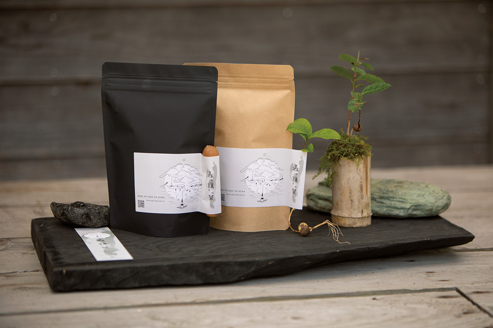
Чаи марки делают из листа кустов, растущих сами по себе, и в обычные магазины они не попадают. Цены 2021 года:
- Чёрный чай ручного сбора: весенний лист одичавшей «Ябукиты» собирают руками и ферментируют. Пьётся мягко, а сила листа чувствуется без резкой терпкости (20 граммов за 1080 иен).
- Улун: весенний лист подвяливают, слегка ферментируют, обжаривают в котле и медленно сушат. Аромат цветочный, со своеобразным вкусом старых местных кустов (100 граммов за 1620 иен).
- Сайсэй, зелёный чай солнечной сушки: молодые побеги весной собирают руками, прогревают в котле и сушат на солнце. В нём сила старых кустов и минеральность, как у натурального вина (100 граммов за 1620 иен).
- Камаири-тя, зелёный чай, обжаренный в котле: особый «котловой» аромат, которого нет у обычного сэнтя. Заваривать лучше медленно, а в стеклянной посуде видно, как раскрывается целый лист (100 граммов за 1620 иен).
- Смесь лесных трав из Кумамото: местные травы, никкэ, кустарник куромодзи и хвощ. Без горечи, с чистым вкусом, похожим на прозрачный бульон. Состав меняется по сезонам (50 граммов за 1296 иен).
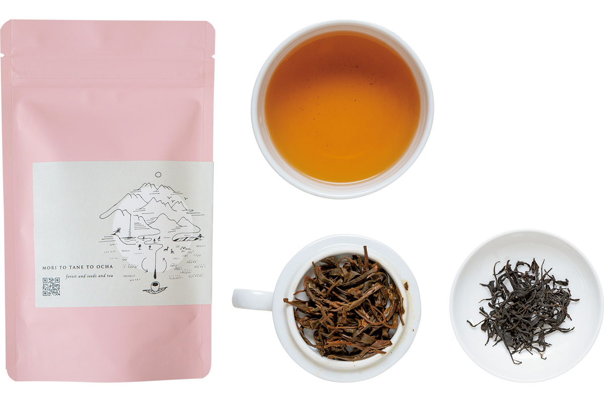
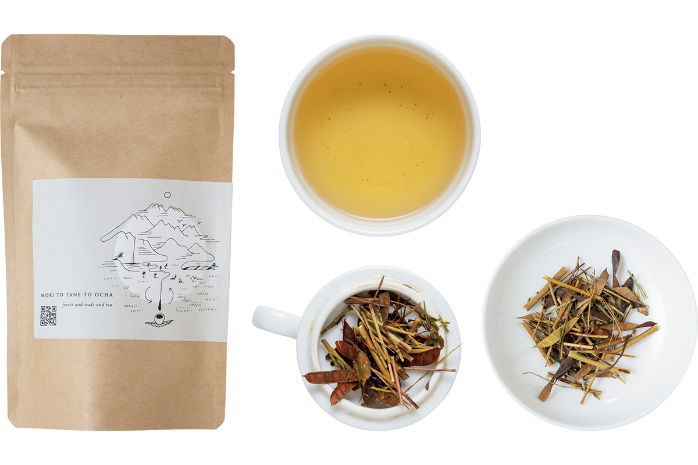
mori to tane to ocha
Фото: Ёсихито Одзава.